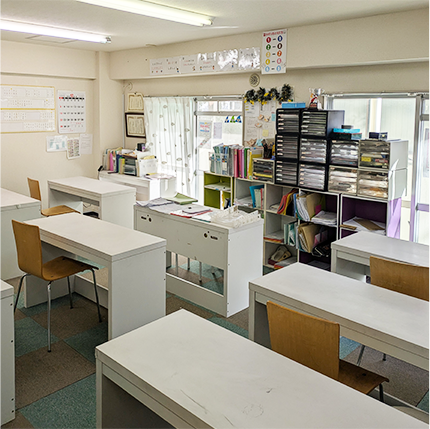
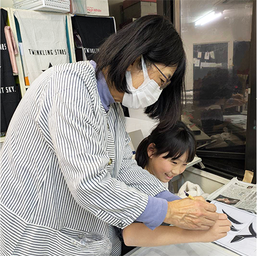
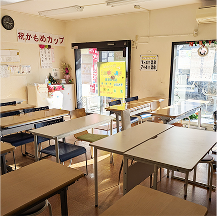
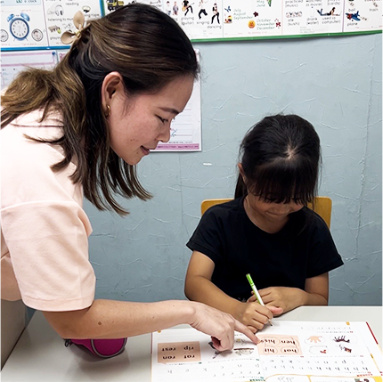

子どもたちの可能性を伸ばし「笑顔をつくる」。
子どもたちの笑顔と元気さに囲まれる。
そんなお仕事を私たちと一緒にしませんか？
ヒルズキッズの想い
ヒルズキッズの創業の想い、それは"教育業＝子供達の教育を通じて地域を日本を良くしていきたい！"というものでした。おかげさまで横浜エリアで事業を始めて数年が経過し、多くの生徒様、保護者様に支持されています。
子供達は無限の可能性を持っています。だからこそ周囲の環境、教育、接する大人たちの姿などによって、子供達は飛躍的に成長することもあれば、その可能性が閉ざされてしまうこともあります。だからこそ、ヒルズキッズは子供達と接する"先生""スタッフ"の志・想いを大切にしたいと考えています。
お金のために仕方なく働く、ただ講師経験があるからなんとなく働く、そんな考え方ではなく、本当の意味で子供達のために頑張ることのできる人を仲間としてさがしています。
子供達は常に成長しています。だからこそ、その子供達の見本となる私達大人も常に成長を志向し続けなければいけない！そうヒルズキッズは考えます。成長を目指す大人の姿は子供達にとって最高の教材になるからです。
そのため、ヒルズキッズはこれまでの講師経験や資格以上に、その人の「成長への想い」を重視します。逆に言えば講師経験や資格を持っていなくても、研修サポートで身につけていただければいいのですから。
子供が大好きな方、教えることが好きな方。子育てが終わって、次は地域の教育のためのお仕事がしたい主婦の方。子供達の笑顔に包まれ、子供達の可能性に接することができるこのお仕事はとても楽しいものです。
ヒルズキッズはただ子供達のために本気で頑張れる人を仲間として募集しています。
事業内容
子どもの心を育み
、才能を引き出す
習い事のテーマパーク
単なるお受験や習い事スクールではありません。
ヒルズキッズは知育・体育・徳育の3本柱を育てるための「楽しみながら子どもが学べる」カルチャーテーマパークです！
子どもたちの健やかな成長のために必要な「しつけマナー」や「創造力」「感受性」「脳力」などをトータルに育むための最新の人気講座を品揃えします。
また保護者のための育児情報を提供する情報発信センターとなります。
ヒルズキッズで働くメリット
-
講師未経験でもOK
講師研修などのサポート体制は充実していますので、
経験がなくても大丈夫です。大切なのは子供達のために
「頑張りたい！」というやる気です。 -
様々な業務を担当できる
授業だけでは子供達の可能性は伸びません。だからこそ、
授業外のコミュニケーションや保護者の方とのコミュニケ
ーション（会話・お手紙など）も担当していただきますし、
様々なイベント、広報などの活動にも参加していただきます。 -
先生のカラーを出せる
ヒルズキッズでは完全なマニュアルは用意していません。
なぜなら、先生の個性を大事にしているからです。
そのため、自分の個性を子どもたちに伝えることができます。
求める人物像
-
視野が広い方
広い視野を持つことで、子どもへの新しい発見や気づきが生まれます。子どもの成長をさらに伸ばすためのヒントが日々の仕事の中にあるので、さまざまな角度から見守っていくことが大切です。
-
チーム意識のある方
子どもの成長や状況をチーム内で共有し、みんなで子どもを見守る環境づくりを大切にしています。そうすることで、子どもとの強い信頼関係を築くことができます。
-
向上心のある方
現状に満足せず、より良い環境を作り出そうとする意欲のある方を求めています。なぜなら、私たちスタッフは子どもたちの見本であり、大人自身も常に成長を志向し続けなければならないと考えているからです。
ヒルズキッズのお仕事
： スクール事務スタッフ（パート）
- スクールの受付事務・広報企画などバックヤードのお仕事をしていただきます。最低限のパソコンスキルが 必要になります。
-
○ 勤務地 ： ヒルズキッズの拠点エリア
○ 曜日・時間 ：
平日11時～19時のなかで4時間程度○ 要パソコンスキル
（ワード・エクセル・パワーポイントなど）
： 書道インストラクター（パート）
- カリキュラムに沿って硬筆・毛筆を指導します。指導が未経験の方は講師技術習得のための研修を受けていただきます。
-
○ 勤務地 ： ヒルズキッズの拠点エリア
○ 曜日・時間 ： 平日14時〜20時（内2〜4時間）
○ 未経験可
： そろばんインストラクター（パート）
-
ヒルズキッズのそろばん講座のインストラクターとして活躍していただきます。珠算資格経験者優遇。
インストラクター研修・資格取得もサポートいたします。 -
○ 勤務地 ： ヒルズキッズの拠点エリア
○ 曜日・時間 ： 平日14時〜20時（内2〜4時間）
○ 経験者優遇・未経験可
： 英会話日本人インストラクター（パート）
- ヒルズキッズの英会話講座の外国人講師のサポートと文法レッスンの担当をしていただきます。外国人講師と コミュニケーションがとれるだけの英会話力と、子供達に文法を教えることができる英語力が必要です。
-
○ 勤務地 ： ヒルズキッズの拠点エリア
○ 曜日・時間 ： 平日14時〜20時（内2〜4時間）
○ 経験者優遇・未経験可
募集要項
講師未経験者も可 技術研修もあり
- 時 給 1,162円～（資格・経験に応じて応談）
- 時 間 14:00～19:30 ※応相談
- 待 遇 交通費支給
-
応 募
電話連絡の上、
履歴書（写貼）持参でご来社ください
-
T E L：
045-532-4196（担当：斎藤） - 受付時間：11:00～15:00
-
本部住所：
神奈川県横浜市青葉区桜台26-1第3アサキビル
スタッフインタビュー
-
そろばん講師 E 先生
子どもたちの成長を見守っていけることが楽しいです。理解するまで繰り返し根気強く教え続け、できるようになったときに達成感を味わうことができます。
働く上で大切にしていることは、一人ひとりの個性を見抜くことです。その子にあった声掛け、指導、実力を伸ばせるように一人ひとり見ています。
仕事では、たくさんの子どもとのふれあいで元気をもらい、楽しいです。自分自身のそろばんのスキルも活かせ、充実しており経験を重ねることで自信になっています。 -
書道講師 Y 先生

働いている中で、楽しさを感じることがあります。それは、授業前に学校であったいろいろなお話を聞かせてくれる場面です。
私が子どもたちに一番に思うことは書くことを楽しんでほしいということです。一人ひとり取り組みやすい目標を決めながら、達成感を感じてもらえるような授業を工夫しようと思っています。
日々、働く中で子どもたちの成長を間近に見ることができ、やりがいを感じています。知識と技量をどう解りやすく伝えていくか、まだまだ勉強が必要で自分の向上心へつながっています。 -
英会話講師 M 先生
子どもたちと一緒に英語を勉強することが楽しいです。さらには、「教える」ことにより自分自身の英語力のスキルアップにつながっていて嬉しく思います。
スタッフの方々に恵まれており、良い環境の中で仕事ができています。
小さな教室なので、ほかの教科の先生やスタッフの方々とコミュニケーションをしっかりとることを大切にしています。
自分自身が働いていて、今まで以上に相手の気持ちを汲み取ることを意識するようになったことが成長したと感じています。
ヒルズキッズの事業展開エリア
横浜市青葉区エリアを中心に展開しています。
今後も多くのお客様からのご要望にお答えして拠点展開を目指していきます！
- 
- 
- 
- 